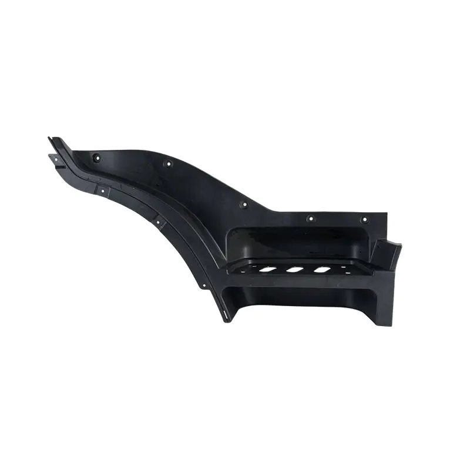

Mold Engineering
Why Conventional Cooling Is the Biggest Hidden Cost in Large Automotive Panel Tooling
Straight-drilled waterlines quietly add seconds to cycle time and millimeters to warpage. How conformal cooling reduces cycle time by 20–35% on large panel molds — and when the investment pays for itself in under six weeks.
Read more →